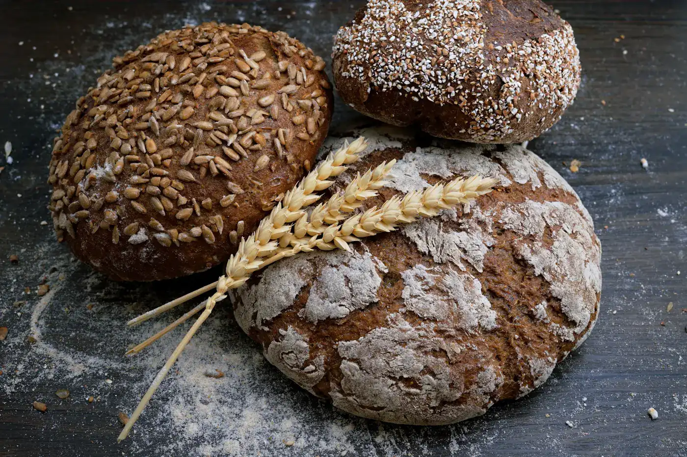
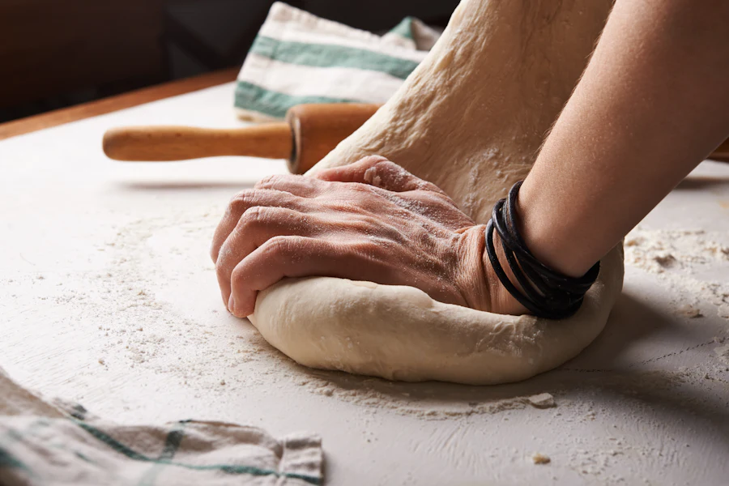

Queso herreño del día, huevos frescos, matalahúva y nuestro horno de leña. La misma receta que empezó la bisabuela, sin cambiarle una coma.

Del horno de leña, cada mañana desde 1932.
Todo se hornea por la mañana temprano. Si quiere cantidad para un bautizo o una fiesta, encárguelo con dos días.
En 1932, la bisabuela Remedios empezó a hornear quesadillas en el mismo horno de piedra que seguimos encendiendo hoy. Primero para la familia, luego para los vecinos, y al final para media isla.
El secreto no es ninguno: queso herreño fresco de las queserías de aquí al lado, huevos de la zona, matalahúva, limón y el punto exacto de horno que solo se aprende con años. Ni conservantes, ni prisas, ni máquinas raras.

Si pasa por Valverde, entre a vernos: el obrador huele a leña desde las seis de la mañana y siempre hay alguna recién salida para probar.
Fresco, de las queserías de la isla. Es lo que hace única a la quesadilla.
El mismo horno de piedra desde 1932. El sabor que no da un horno eléctrico.
Cada quesadilla se moldea una a una, con su forma de flor de siempre.
Nos dice cuántas cajas quiere y a dónde se las mandamos.
Sus quesadillas se hacen ese mismo día y se empaquetan bien protegidas.
En 24–48 horas en Canarias, 2–4 días en península. Pago por Bizum o transferencia.
Muchos herreños que viven fuera nos encargan cajas para matar la morriña — y nietos que se las mandan a los abuelos. De eso vivimos, y con orgullo.
Obrador y despacho:
Calle La Constitución 18
Valverde · El Hierro
¿No puede venir? También nos encuentra en tiendas y supermercados de toda la isla.